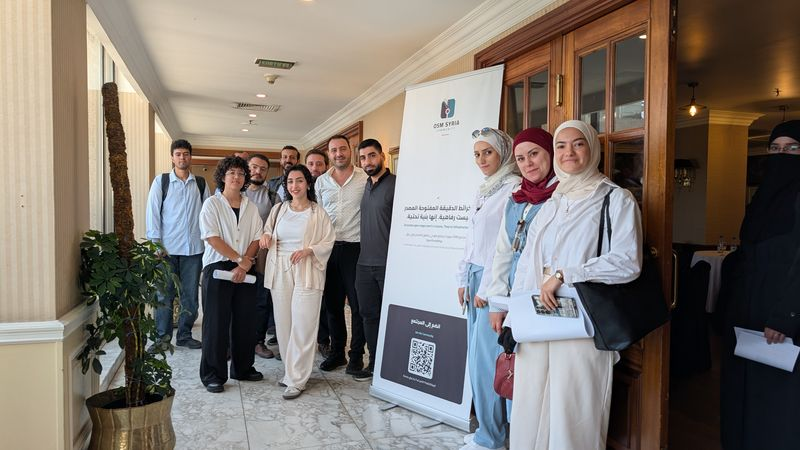
الأنشطة
ماباثونات أونلاين، ورشات عمل ولقاءات حضورية، وويبنارات. معظمها باللغة العربية، ولا يشترط وجود خبرة مسبقة.
«أكثر من مجرد خرائط»: بناء المجتمع من خلال إعادة رسم خريطة سوريا
أونلاين · موقع HOT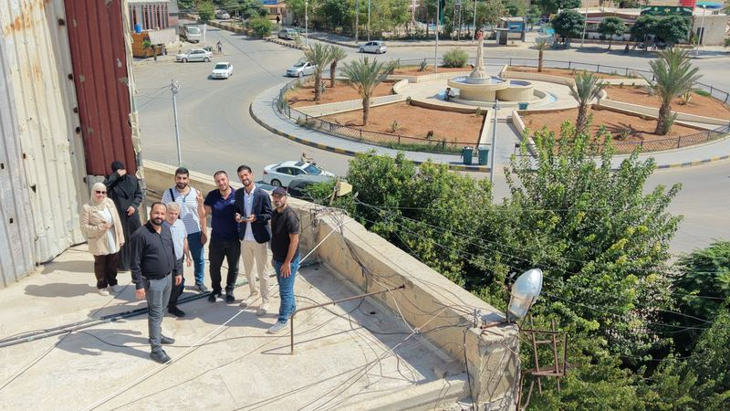
ورشة عمل مع فريق GIS في مجلس مدينة دوما
دوما، ريف دمشق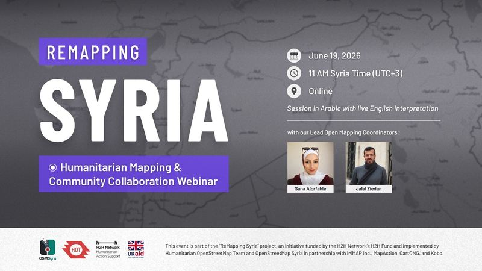
ويبنار ReMapping Syria 2025
أونلاين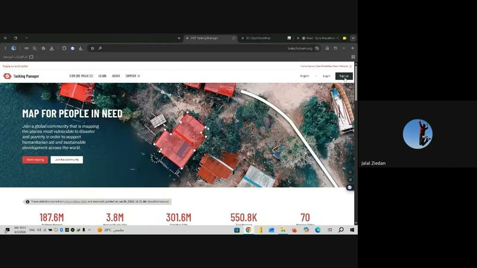
ماباثون سوريا السادس
أونلاين · بالإنجليزية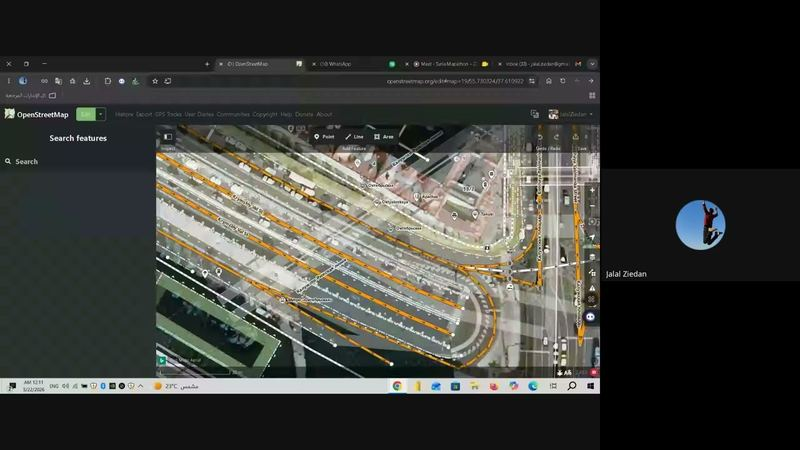
ماباثون سوريا الخامس
أونلاين · بالإنجليزية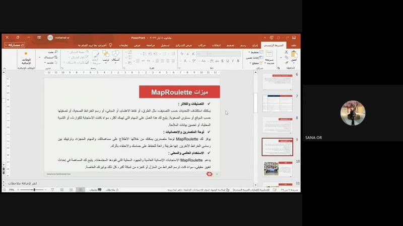
ماباثون سوريا الرابع: MapRoulette
أونلاين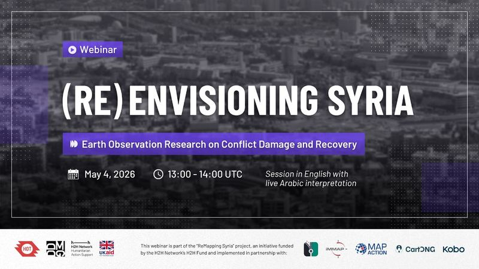
ويبنار (Re)Envisioning Syria عن رصد الأضرار والتعافي
أونلاين · مع HOTماباثون سوريا الثالث: JOSM
أونلاين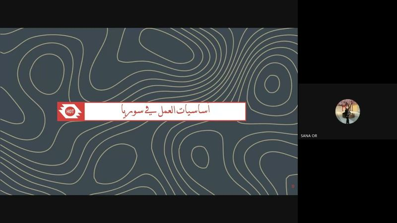
ماباثون سوريا الثاني: مدير المهام
أونلاين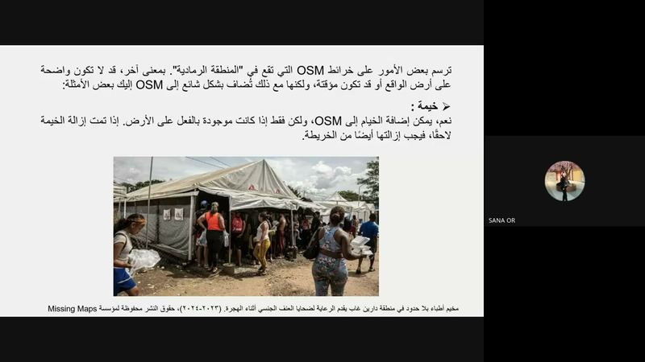
ماباثون سوريا الأول
أونلاين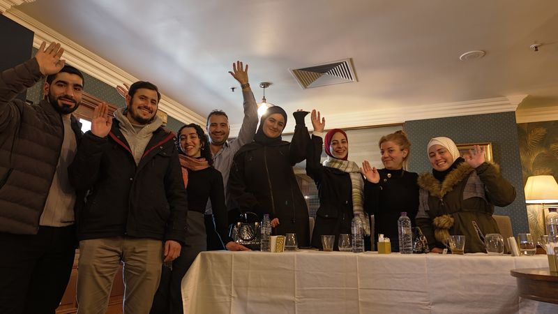
الاجتماع الثالث للمجتمع
دمشق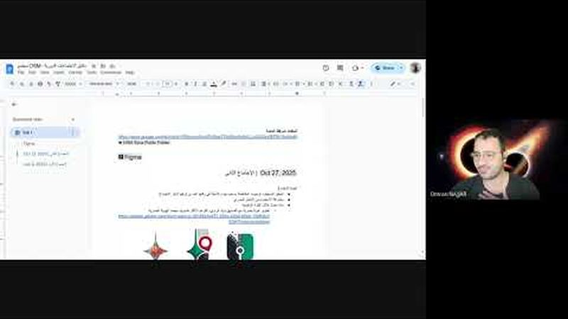
الاجتماع الثاني للمجتمع
أونلاين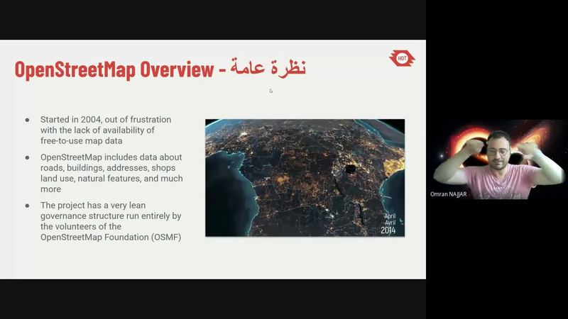
الاجتماع الأول للمجتمع
أونلاين
لا توجد أنشطة قادمة معلنة حالياً
نعلن رسمياً عن الماباثونات واللقاءات الجديدة عبر البريد الإلكتروني لكل من يملأ استمارة الانضمام، والجميع مرحّب بهم في قناة تيليغرام أيضاً.